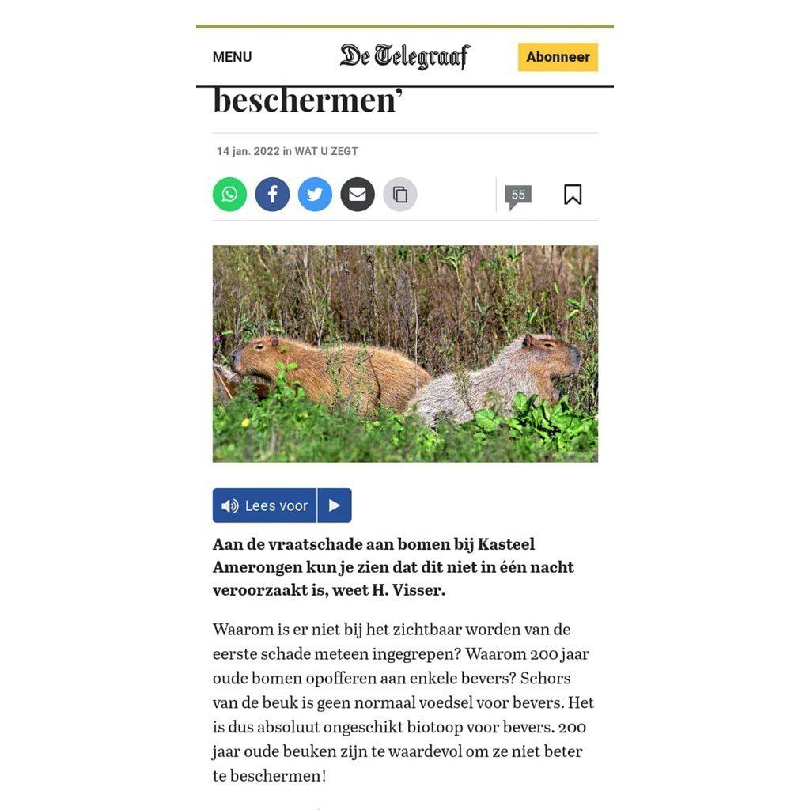

Capibara in Amerongen
26 januari 2022 · De Telegraaf
- Op de foto
- Capibara
- Het ging over
- Inheems knaagdier

Nooit geweten dat er Capibara’s leven in Amerongen. Thanks voor de info @telegraaf.nl !

Nooit geweten dat er Capibara’s leven in Amerongen. Thanks voor de info @telegraaf.nl !